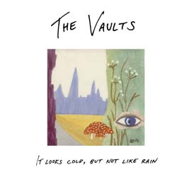

The Wonder Boys
discography

The Vaults: It Looks Cold, But Not Like Rain
cd album, released 5 june 2005
1. Eva’s Chair 0:58
2. Gong Gong Song 6:22
3. Librarians 3:05
4. Flaskpost 3:23
5. Unsurpassed Masters 2:23
6. Sax Play 0:52
7. Café CM 2:36
8. Rolled Oats, Sugar And Milk 1:36
9. Slapp Drönare 2:50
10. Noisette #6 0:49
11. Stuck In Customs 0:44
12. Guilt Trip Planner 3:40
13. Memory Of A Free Thrift Store Market 0:23
14. Everyone’s Excited About The Game, But Me 3:00
15. Sax Jam 1:38
16. On The F-F-F-Floor 2:14
17. Why Keep Anything 1:10
18. Librarian Dogs 3:10
19. Voices/Chiquita Chorale (excerpt) 1:12
20. Safe Sax 2:25
21. Previous Owner’s Blues (objet trouvé) 0:45
22. Let’s Glitch (snippet) 0:04
23. The Bench 4:06
24. New Year’s Present 4:50
25. Ivanhoe 2:30
26. (Missed the) Last Train To Sleepville 2:33
All tracks by David Liljemark, except 5 & 16 by DL & Christian Kastén
and 12 by DL & Markus Lantto.
3/18, 4, 5, 10, 14, 25 previously unreleased (some will probably go on the next
TWB album).
7, 13 from “Die Grosse Schlagerparade” cd
2, 9, 21 from “Die Kleine Schlagerparade” cd
23 from the ”Dayw” 2-cd (“plastic bag only mix” of This
Used To Be Our Bench from Die Grosse Schlagerparade)
22 from the mp3 section of this web site, but don’t miss out on the full
“Let’s Glitch” cd
1, 16 (edit), 17 (edit), 24 (edit) from “The Grand Tradition Of Sitting
Between Chairs” cd
26 from Good Sides 2-cd
24 (edit) from “Happy New Year EP” cd
8, 11 (edit), 12, 15, 20 from ”T.A.S.C.A.M. Manifesto” cd
6, 19 from ”II” cassette and the “0,000 001 Million Wonder
Boys Fans Can’t Be Wrong” cd collection
Recorded 1997-2005.